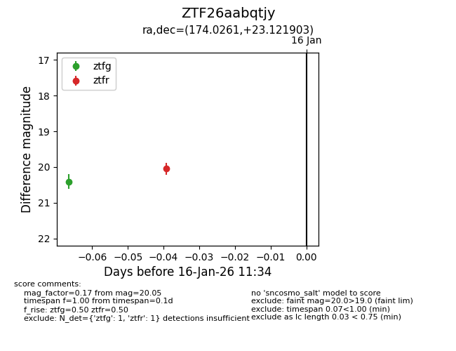
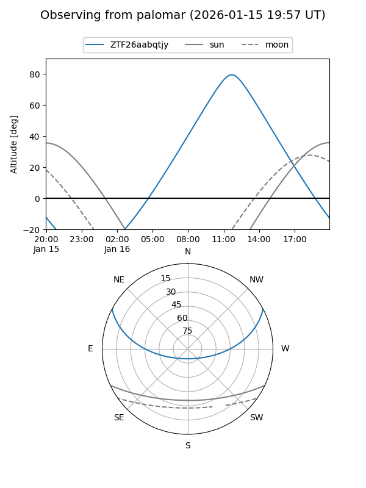

ZTF26aabqtjy
Target ZTF26aabqtjy at 2026-01-16 11:35
Aliases and brokers:
FINK: link
Lasair: link
ALeRCE: link
alt names
ZTF26aabqtjy (ztf,fink_ztf)
Coordinates:
equatorial (ra, dec) = 174.0261,+23.12190
equatorial (HMS+DMS) = 11:36:06.27,+23:07:18.85
galactic (l, b) = (222.0060,+72.50349)
Flags:
Photometry:
last ztfg=20.41, ztfr=20.05
1 ztfg, 1 ztfr detections
Lightcurve

Visibility


Additional plots